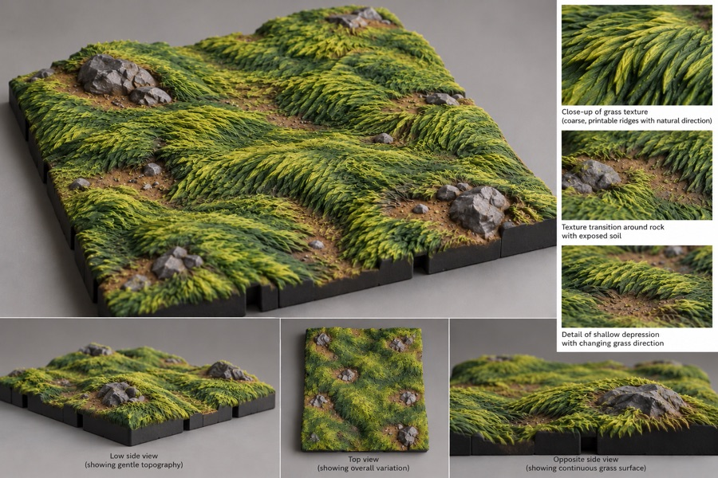
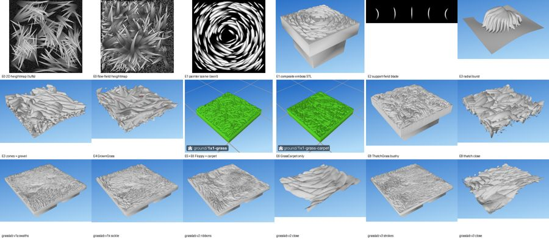
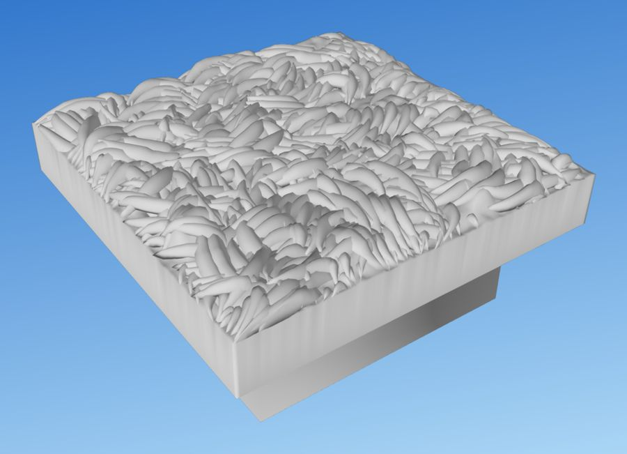

What it looks like
At tabletop distance grass reads because of its middle-scale order, not its fine detail. Blades gather into ribbons that follow one smooth flow. The flow meanders in gentle S-curves about 15 mm long, and neighbouring ribbons wave together, the way wind lays long grass flat. A 2×2 tile has at least three main directions, never one sweep across the board.
Each blade stands on the dirt by itself: a keel at the bottom, a single-line ridge on top, pointed at both ends, rising from its root and levelling off toward a tip that overhangs open air. Blades overlap downstream like shingles. Between ribbons the dirt shows as dark seams.
A few bare clearings, about one and a half per square and about a tenth of the tile, sit in low ground. They are eye-shaped, stretched along the flow. The grass parts at their upstream end and closes again downstream, like water round a stone, and their banks are piles of separate blades. The ground under everything rolls gently: hills rise from flat plains at the tile edge and never dip below it.

grasslab/reference/approved-reference.png). The rocks in it come from the rocks look; grass and rocks together are the composition look.Using it in a tile
In the Rust engine grass is a surface named on one line. The library keeps two presets in library/parts/grass.kdl (branch rust/p1), and library/tiles/ground/2x2-grass-tree.kdl uses one under a tree:
use "parts/grass" long-grass
tile grass-tree size="2x2" seed=84 {
stack {
ground // flat, at the ground level (5 mm)
long-grass // grows round the trunk, wherever it is listed
tree height=40 { … }
}
}Or write the line yourself:
grass length=10 curl="36..81" tufts=3 cover="100%" flow=wavyChange the tile's seed for different grass with the same character. The grass look reaches the Rust engine in phase P4 (see the plan). Until then the lab builds it:
python grasslab/grasslab.py --seed 1 --cols 2 --rows 2 # → grasslab/out/2x2-sculpted-grass-s1.stl
python grasslab/grasslab.py --seed 1 --cols 1 --rows 1 --flat # flat ground, for studying bladesThe Python library's own grass (ThatchGrass, built by dharmatiles-gen from src/tiles/) is an older look; see the History below.
Specification
Controls
The controls of the grass line in the tile language (crates/dt-doc/src/looks.rs). Everything else (hills, clearings, banks, rim steering, blade cross-section) is fixed at the approved values.
| Control | Values | Default | Effect |
|---|---|---|---|
length | mm, or a range | 10 | Blade length. |
curl | degrees, or a range | 36–81 | How far a blade bends over. |
tufts | per square | 3 | Clumps the blades gather into. |
cover | share, % | 100% | Share of the ground grassed over. |
flow | combed, wavy, wild | wavy | How tidily the blades lean together. wavy is the approved meander (±10–30°); combed and wild are provisional. |
The lab has no controls beyond --seed, --cols, --rows and --flat. The Rust defaults above come from the Python library and are retuned to the lab's blades in P4 (see Open issues).
Sizes and levels
- Tile. Any size in 35 mm squares; 2×2 by default.
- Blades. 2.8–7.2 mm long (longer toward the downstream end of each swath), 2–4 lines (0.9–1.8 mm) wide, 1.5–2.0 mm tall. No grass stands more than 3.5 mm above the local ground.
- Grass top. The mean grass top sits in the DungeonBlocks grass band: 4.4–5.9 mm above the terrain datum (15.3–16.8 mm above the bottom of the piece). Seed 1 measures 5.24 mm.
- Ground. The tile edge is at 3.4 mm, the lowest ground on the tile. Hills rise from it to about 6.6 mm; at least 60% of the tile slopes 12° or less and nothing passes 34°.
- Clearings. 1.3–1.8 per square, at least 13 mm apart and 7 mm from the rim, covering about 10% of the tile, sunk 0.4 mm below the grass ground.
Edges and joining tiles
- The ground feathers to the 3.4 mm edge level over the last 9 mm, so any two grass tiles meet flush at the ground.
- Grass is never sliced at the edge. Blades are shortened so their tips stop just inside the wall, by a varying amount, so the rim is never a ruled line.
- Near the rim the flow points at the wall or runs along it, never away from it, so the grass reads as running off the tile into the next one. The blades themselves do not line up across a seam.
- Tile sizes, edge names and the edge contract are on the tile system page.
Printing and painting
- No supports, by construction. Each blade is a stack of 0.2 mm layers, each a whole number of 0.45 mm lines wide; nothing is narrower than one line, so the slicer drops nothing. Each layer reaches at most half a line past the one below.
- Undercut tips. Only the top layer reaches the tip; each layer below stops 0.2 mm short. The tip therefore overhangs air by design, in steps a printer can bridge.
- No islands. Every blade is sunk 0.3 mm into the ground. The STL is one watertight body that survives a float32 reload.
- FDM or resin. The STL is the stroke stack smoothed: the layer steps are melted, but the outline, keel and points are kept, so it also prints cleanly on resin.
- Painting. Prime dark and drybrush. Crests catch the highlight; the gaps between blades, the air under each tip and the seams between ribbons stay dark.
- File size. A 2×2 tile is about 1.7 million faces and 87 MB, and takes about 100 s to build.
The full printing rules are on the printing page.
How it is made
The generator is grasslab/grasslab.py (line numbers at commit e0bcb77; the code last changed in 0616212). It builds the field first, then each blade, in seven stages:
- Hills.
make_ground(line 238) draws smooth noise, keeps about 40% of the interior flat at the edge level, lets hills rise from it, caps the slope at 34° and feathers to the 3.4 mm edge. - Flow.
make_direction(line 311) sets a regional angle that drifts over about 15 mm, adds an S-curve meander in phase across neighbouring streamlines, and pulls slightly downhill. Working on one angle per point means the flow can never form a whorl. - Swaths. Warped cells about 11 mm apart group the ribbons and make blades longer toward each cell's downstream end.
- Clearings and rim.
place_lenses(line 442) puts eye-shaped clearings in low ground;finish_flow(line 467) bends the flow round each one;steer_rim(line 527) turns the flow toward or along the tile edge, choosing one turn direction per stretch of rim so it never meets itself head-on. - Ribbons.
make_strand_roots(line 645) seeds strands 2.65 mm apart and traces each 15–30 mm along the flow; blades root every half blade length along it.draw_frond(line 765) shortens blades at the rim, at clearings and at obstacles (never slicing), and makes shortened blades lower. - Blades.
blade_layers(line 812) builds the stroke stack: line counts per layer such as 2 3 4 4 4 4 4 3 2 1, a convex rise, the raked tip and pointed ends.blade_mesh(line 860) lofts through the layer outlines, blurs lightly, meshes at 0.05 mm, seats the blade on the hills and reduces it to 1,500 faces. - Assembly. The dirt ground (with the shared dirt texture from ground) and every blade are unioned, then
attach_base(line 999) adds the DungeonBlocks base, keeps the largest body and exports throughstl_safe(line 1060).
Key constants
| Constant | Line | Value | Meaning |
|---|---|---|---|
GROUND_EDGE_MM | 44 | 3.4 | Edge level, the lowest ground. |
HILL_PLAIN_FRAC | 48 | 0.4 | Share of the interior left flat. |
MAX_GROUND_SLOPE_DEG | 51 | 34 | Steepest ground. |
MEANDER_WAVELENGTH_MM, MEANDER_AMP_DEG | 58 | 15; 10–30° | The S-curve of the flow. |
SOIL_LENSES_PER_SQ | 74 | 1.3–1.8 | Clearings per square. |
STRAND_SPACING_MM, STRAND_LEN_MM | 108 | 2.65; 15–30 | Ribbon spacing and length. |
FROND_LEN_MM, FROND_H_MM | 115 | 3.5–6.5; 1.5–2.0 | Blade length (before the swath scaling) and height. |
LINE_W_MM, LAYER_MM | 130 | 0.45; 0.2 | The printer's line and layer. |
KEEL_LINES, TOP_LINES, MAX_LINES | 132 | 2; 1; 2–4 | Blade width in lines: keel, ridge, body. |
RAKE_MM | 136 | 0.2 | How much shorter each lower layer stops: the undercut. |
EMBED_MM | 143 | 0.3 | How deep blades sink into the ground. |
BLADE_FACES | 144 | 1,500 | Faces per smoothed blade. |
DB_GRASS_BAND | 161 | 4.4–5.9 | DungeonBlocks band for the mean grass top. |
Single blades can be inspected with python grasslab/blades_demo.py (add --strokes for the raw FDM stroke stack).
Design record
For the people developing the look: Shawn's rulings, the requirements, audit numbers, the variant history and open issues. Owned by the labs (grasslab, used by meadowlab and shorelab). Approved: grasslab v3, stroke blades, 29 Oct 2026.
Rulings (20)
Shawn's decisions, oldest first. Each holds unless a later line replaces it. The 27 Oct rulings come from the lab's iteration log (v1c–v2f).
| Date | Ruling | Shawn's words |
|---|---|---|
| 3 Jul | Library field-simulation grass is flat by construction; its blade shape is kept, its arrangement and relief rebuilt. | “blade shape is fine.” · “the reference ends up being lumpy and organic, current grass renders flat with grass flat across a surface.” |
| 3 Jul | ThatchGrass (bushy) becomes the library's default grass. | “The bushy one is great. Good as defaults. Good as default grass.” |
| 27 Oct | More relief and a few bare patches. | “increase the hills a bit… a few patches of bare ground” |
| 27 Oct | Slightly more of both. | “slightly more hills, slightly more bare patches” |
| 27 Oct | Puddle-shaped patches with trench rims and bubble pebbles are rejected. | “bare patches are terrible” |
| 27 Oct | Grass must end as grass: no bevels, carved walls or border steps. Grass height exists only as blades. | “the grass is just being uniformly chopped down like it was all made of clay.” |
| 27 Oct | More hills and bigger bare patches. | “more hills and bigger bare patches” |
| 27 Oct | Clean up artefacts in the bare patches. | “bare patches have some weird artifacts” |
| 27 Oct | Grass at the rim must not point away from the edge. | “shouldn't point in the other direction” |
| 27 Oct | Curve the grass, coherently. | “our grass is very straight… should be more curved, but not randomly” |
| 27 Oct | More curves and several directions. | “more curves… not just one big sweep” |
| 27 Oct | After the lodged-grass photo: the flow carries direction; ribbons follow it. | “go with the flow-following ribbons” |
| 27 Oct | Shorter blades at miniature scale, keeping the meander. | “at miniature scale the blades should be shorter… still like that meandering look” |
| 27 Oct | Blade length: halfway between the two tries. | “split the difference” |
| 27 Oct | Banks are piles of blades, not walls. | “a big pile of grass leans up right against [a clearing]… undercuts at the bottom of the grass blade so there's clear ridges down the side.” |
| 27 Oct | Hills rise from a constant perimeter; nothing dips below the edge. | — |
| 28 Oct | grasslab and rocklab approved; keep the labs standalone. | “spectacular job on both grass and rocks… I love your work.” |
| 28–29 Oct | Undercuts were not real: the heightfield blades never left air under the tips. | “there is no undercut” · “the top of the blade doesn't fill the volume we define” |
| 29 Oct | Model the blade in printer units, and stand blades on dirt with no turf mass. | “make it more honest about the shape, so that we can refine THAT rather than a theoretical ideal.” · “no turf mass.” |
| 29 Oct | Stroke blades become the only grass method. | “make that the … only way to generate grass blades” |
Requirements
The lab's requirement IDs from revision 4 (29 Oct 2026), with when each arrived. [S] is checked by a script or statistic, [R] by eye. The full text, with every failure mode and the retired requirements, is in the archive.
- REQ-OUT-1…6 [S] One binary STL per run; one closed watertight body; DungeonBlocks base with the mean grass top in the 4.4–5.9 mm band; deterministic per seed; under 100 MB and 2 minutes at 2×2.
- REQ-B-1 [S] Whole 0.2 mm layers and whole 0.45 mm lines; nothing narrower than a line. Added 29 Oct (replaces the voxel rules REQ-FDM-1…8).
- REQ-B-2…5 [R] Keel of at least 2 lines, single-line ridge, width growing at most one line per layer; a convex arch; a raked bow (each lower layer 0.2 mm shorter); every section pointed at both ends. Added 29 Oct.
- REQ-B-6 [R] The STL blade is the stroke stack smoothed: no layer steps. Added 29 Oct.
- REQ-B-7 [S] Every blade fused 0.3 mm into the ground; grass at most 3.5 mm above the ground. Added 29 Oct.
- REQ-B-8 [S] An overhang and crumb audit on every output. Added 29 Oct.
- REQ-HILL-1…6 Independent rolling ground, 15–40 mm landforms, at least 60% at ≤ 12°, none over 34°, feathered to a constant edge. REQ-HILL-3 amended 27 Oct: rises only; the perimeter is the lowest ground.
- REQ-FL-1…5 [R] Blades follow streamlines of one field; meandering, in-phase flow with at least three directions per 2×2; ribbons 2–3 mm apart; flow wraps round clearings; no whorls. Added 27 Oct (v2a), replacing swath fans and sickle bends.
- REQ-FL-6 [R] Banks read as piles of blades. Added 27 Oct (v2e).
- REQ-SW-1 [S] Swaths cover everything. Amended 29 Oct: they no longer carry a height wave.
- REQ-FR-1, 2, 5 [R] Blades 2.8–7.2 mm along the flow, shingled downstream, varied with no repeats.
- REQ-FR-3 [R] Blades on dirt; no pad, skirt or filler. Amended 29 Oct: “no turf mass.”
- REQ-EDGE-1…5 [R] Grass is only blades; banks and the rim are blade outlines; blades shortened, never sliced; shortened blades lower. Added 27 Oct (v1f) after the “clay” ruling.
- REQ-EDGE-7, 8 [R] Flow runs to or along the rim, one turn side per stretch; irregular rim endings. Amended 27 Oct (v2g) after the meadow seed sweep.
- REQ-SOIL-1…4 Eye-shaped clearings along the flow, 1.3–1.8 per square, about 10% of the tile; blades lap 0.8–3.2 mm into them; shared dirt texture, 0.4 mm dip, no outlining step. REQ-SOIL-4 amended 29 Oct: the shared dirt texture replaces pebbles.
- REQ-GR-1, 2 [R] Dark gaps and air under every tip; no terracing or ribs.
Named failure modes
Hair, moss, tufts and crowns, shag carpet, wood grain, worms, stamped repetition (fish scales), fingerprints, crumpled foil, flat or melted, fragile literal grass, tent peaks, Z-jitter, terracing, ragged rim, puddles, bubbles, cracks, clay cut, soil debris, wall sprouts, rigid sticks, ruled rim, commas, smooth bank wall, rim seam. Pre-paint test: the bare grey print must read as grass.
Acceptance scenes
| Scene | Content | Passes when |
|---|---|---|
| S0 hills only | 2×2, grass off | Reads as natural ground. |
| S1 flat study | 1×1, --flat | Ribbons, blades, undercut tips and gaps read clearly. Judged first. |
| S2 approved tile | 2×2 with hills, seed 1 | Every requirement holds; no failure mode visible. |
| S3 seed sweep | S2 at seeds 1–6 | At least 5 of 6 pass; none looks stamped. |
| S4 print | S2 printed, primed, drybrushed | Tip and bank shadows survive, grooves stay dark, nothing breaks. |
Audit numbers (v3, seed 1, 2×2)
By construction: whole layers and lines (opening each layer by just under half a line keeps at least 99.9% of it); growth of at most half a line per side per layer; the tip rake; blades sunk 0.3 mm; one scalar flow angle, so no whorls; blades shortened, never sliced.
Checked: audit_overhang (line 1086) sums faces past 58° from vertical (the 55° limit plus 3°); stl_safe (line 1060) rounds to float32, merges vertices and refuses anything that is not one watertight body; the run prints the DB band check.
| Check | Seed 1 |
|---|---|
| Ground | 3.40–6.58 mm, max slope 34.0°, 78% ≤ 12° |
| Clearings | 6 lenses, 9.6% of the tile; dirt between blades 9.1% |
| Blades | 3,288; ≥ 99.9% of every stroke layer wider than a line |
| Grass above ground | mean 1.28, p95 2.00, max 2.20 mm |
| Mean grass top | 5.24 mm (in band) |
| Overhang audit | 15.4 mm² (0.14%) |
| Mesh, size, time | 1.74 M faces, watertight, 87 MB, about 100 s |
Variant history
One line per variant, oldest first. Grass was rebuilt more often than any other look; the full family tree with every pipeline is on the archived variants page.
| Date | Variant | What changed, and why |
|---|---|---|
| 26–27 May | E0 heightmap emboss | 2D blade strokes embossed by OpenSCAD, at most 2 mm deep. A texture, not grass. |
| 28 May | E1 painter's-algorithm scene | A crisp swirl of lens blades, still a texture. “geometry is completely broken (at steep tilt)”. |
| 28–30 May | E2 first 3D blades | Arched blades over a support field; heights blew up. |
| 1–5 Jun | E4 GrownGrass | Spiky crossing tubes with support posts; bald spots. |
| 6 Jun – 3 Jul | E5 FloppyGrassLayer | Total coverage of near-flat ribbons: flat by construction. |
| 9 Jun → | E6 GrassCarpet | An embossed blade carpet; still under the library grass. |
| 3 Jul | E8 ThatchGrass (library default) | Mound substrate with sheaves of curled blades. “The bushy one is great.” |
| 27 Oct | grasslab v0 | Random lens blades in a voxel volume: crumpled foil. Never committed. |
| 27 Oct | grasslab v1a–v1k (64572fb, 1613bc1) | Swath fronds, then sickle bends: “clumps of commas”, and clay-cut edges. |
| 27–29 Oct | grasslab v2 (3429f18, 144b46b) | Flow ribbons, clearings and rises-only hills; heightfield blades whose undercuts were hidden voids. |
| 29 Oct | grasslab v3 (0616212), approved | Stroke blades in printer units, smoothed, standing on dirt. The only grass method. |


Rust port
Phase P4, “Grass, meadow, shore and reeds, the first real test of plan-then-build”. Exit gate: blades watertight at about 1,500 faces, bare earth at 20% ± 3 points (meadow), meadow builds in 15 s or less (from 85 s), Shawn's sign-off and a test print. The grass line exists in the vocabulary (crates/dt-doc/src/looks.rs) and two presets are in the library, but nothing builds grass yet. No parity contact sheet yet.
Reference photos
The photos and target images this look is judged against. Click a photo to view it large; arrow keys step through. Wikimedia Commons photos keep their file names and licences as given on their Commons pages.

Open issues
- The Rust
grasscontrols (length 10 mm, curl 36–81°, tufts 3 per square) come from the Python library's grass, not grasslab: lab blades are 2.8–7.2 mm long, have no curl control and do not gather in tufts. P4 must map them to the lab or change the vocabulary. - The approved renders predate the red-overhang render rule; new renders should paint overhang faces red.
- A 2×2 tile is 87 MB and about 100 s to build, roughly 30 times slower than the library grass; most of the time is meshing blades.
- Grass does not tile seamlessly: neighbouring tiles meet at the edge level, but ribbons do not continue across the seam (out of scope for the lab).
- No S4 test print of v3 is recorded.
References
- Reference photos and target images: the gallery above.
- The target image (above),
grasslab/reference/approved-reference.png, and Shawn's wind-lodged grass photo (long combed ribbons in S-curves parting round bare patches), shared in the session on 27 Oct and not kept in the repo. - The Python library's grass photos and renders from July: reference, printed reference, library grass on 3 Jul.


History
Grass started in May as embossed 2D textures, became 3D blades grown over a support field in June, and settled in the library as ThatchGrass on 3 Jul 2026, which dharmatiles-gen still uses. grasslab started again from a requirements interview on 27 Oct, went through two generations of heightfield blades in two days, and on 29 Oct rebuilt every blade in printer units: that is the approved look, also used by meadowlab and shorelab.
The full texts are archived: grasslab's requirements and design and iteration log; the library pages for mound-thatch grass and the grass underlay; the July greenfield requirements interview; the older field-simulation grass (algorithm, requirements, design); and the Rust study's lab analysis and variants.